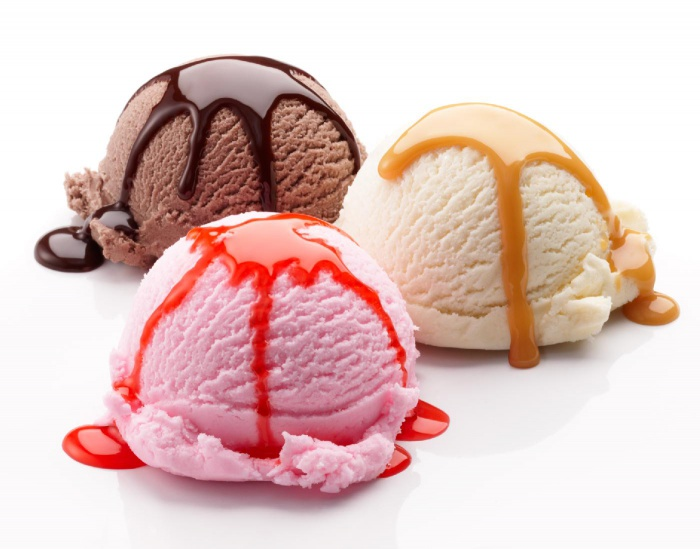

ledai - išsamiai DELFI.lt
2020.10.29 08:57

Spalio 29 d., ketvirtadienis | Vilnius 11 Kaunas 10 Klaipėda 10 Šiauliai 9 Panevėžys 10 Alytus 10 Nida 9 Raseiniai 9 Utena 11 Mažeikiai 8 Biržai 10 Kėdainiai 10 Kiti miestai Paieška | Pranešti naujieną | LT RU EN | Reklama Kontaktai | Statistika | + Apie Delfi plius Prisijungti Naujausios Skaitomiausios Lietuvoje Sportas Orai Kriminalai Užsienyje Veidai Horoskopai Gyvenimas Mokslas Verslas Daugiau Sveikata Kultūra Auto M360 Politiko akimis Jaunimas Pilietis Nuomonių ringas Multimedija Teisė Medijos Karas Propaganda PT Melo detektorius Demaskuok Ačiū už pamokas Temos | Delfi Video
Naujienos
Naujausios Skaitomiausios Lietuvoje Sportas Kriminalai Užsienyje Veidai GyvenimasVerslas Mokslas Kultūra Sveikata Auto Pilietis Miestai M360 Politiko akimis
Delfi Video
Tiesioginės transliacijos Delfi Diena Delfi Dėmesio centre LaidosNaudinga
Orai Horoskopai Receptai TV Programa Valiutų kursaiDelfi projektai
Multimedija Idėja Lietuvai Kablys Smalsūs EP Atsakingas požiūris Atgal į gyvenimąDelfi kanalai
Agro Būstas Moterys Šeima Kelionės Grynas Stilius Maistas Letena Karjera Bored Panda Sek DelfiMobilusis Delfi
Naujausios žinios Naujienų temos Delfi Temos ledai
ledai
Ledai – iš pieno produktų (pieno, grietinės, grietinėlės) pagamintas ir sušaldytas saldus desertas. Ledais vadinami ir šaldytų sulčių desertai.
Helovino šventė: papuošimai namams, prie kurių gamybos noriai prisidės vaikai (3)
Nors šiemet Helovyno šventė bus kitokia, ją paminėti su vaikais visada yra smagu. Dalijamės keleta idėjų, kokiais darbeliais galima papuošti...
Po šios terapijos mama Lina negalėjo patikėti dukros elgesio pokyčiais: tai mums prilygo stebuklui (33) 152
Gimus vaikučiui, daugelis perdėlioja savo gyvenimo vertybes ir viena pagrindinių jų tampa ne kas kita, o sveikata. Savo vaikų sveikata. Deja, ne visi...
Paluckas išplatino laišką partiečiams: įvardijo realiausią koalicijos formą (311) 265
Lietuvos socialdemokratų partijos ( LSDP ) pirmininkas Gintautas Paluckas antradienį atėjęs atiduoti savo balso sakė, kad į žodžių karą su...
Olekas ir Kubilius apie rinkimus: vienas teigia, kad Karbauskiui turbūt perkaito galva, kitas ilgisi rimtų debatų (278) 321
Likus vos kelioms dienoms iki šiųmečių Seimo rinkimų tarp partijų negirdėti rimtų diskusijų apie esminius klausimus, kuriuos reikės spręsti naujai...
Paulius Lukševičius. Ar jau turime ruoštis ekonomikos ledynmečiui? (15)
Iš valstybės biudžeto pasipylę milijonai, pabarstyti skirtingų dydžių vienkartinės išmokos, atskleidė netikėtų reiškinių ir sukėlė dar...
Vaiko žūtis Slengiuose suvienijo Klaipėdos rajono gyventojus: valdininkai mus maitina oriniais pažadais (83) 129
„Ignitis grupė“: galutinė IPO kaina – 22,5 euro, bendrovė pritrauks 450 mln. eurų (23)
Sankcijos Lukašenkos režimui: ar ES lyderiai tėkšis veidu į purvą? (153)
Afganistane sprogus pakelės bombai žuvo 14 civilių
Plungiškė mieste esančius laiptus vadina katastrofa: čia ir velnias sprandą nusisuktų (2)
Turiningiems rudens savaitgaliams: kelionių idėjos penkiuose šalies regionuose (1)
Gilyn į Rusiją. Naktiniai Petrozavodsko klubai: o bože, kakoj mužščina
ES imasi minimalaus atlyginimo klausimo: kaip keistųsi alga Lietuvoje? (572) 126
Palangoje įsikūrusiame viešbutyje – ledai su kanapėmis ir tobulas poilsis (3)
Atgimstantis Paupys slepia intriguojančias istorijas: nuo čia plytėjusio šveicariško sodo iki industrinio rajono
Bauginančiai atrodantis vienas nuošaliausių ežerų planetoje: keistai skilinėjantis ledas kelia daug klausimų (8)
Parduotos pramonės produkcijos kainos rugpjūtį nežymiai didėjo
Kaune atidaryta 50-oji „Lidl“ parduotuvė Lietuvoje (25)
Atostogos LatvijojeKoks Latvijos skonis?
Praplėšus ledų pakuotę vilniečio vos nesupykino: tokia staigmena nežavi (41)
Lietuviški ledai sulaukė įtakingos užsienio žiniasklaidos dėmesio: lietuvių išradingumui nėra ribų (13)
Slaptas ingredientas – medus: super skanūs karamelizuoti bananai su riešutais (9)
Tomaševskis: nėra nieko blogiau nei revoliucijos (1119) 248
Į zoologijos sodą plūstantiems turistams pažėrė kritikos: sumokėjo 8 eurus ir mano, kad gyvūnai jiems turi šypsotis (31)
Gydytojas Morozovas apie tai, ką privalote padaryti iki vasaros pabaigos: pataisys visus likusius metus (32) 199
Žinoma keliautoja sureagavo į kraštiečių priekaištus Palangai: realybė visiškai kitokia (183)
Vienkiemyje gyvenanti natūralaus rauginimo specialistė Ieva paaiškino, kurias daržoves verta rauginti, o kurias konservuoti (112)
Per metus visos gamintojų parduotos pramonės produkcijos kainos sumažėjo 10,1 proc. (1)
Gaivinantys naminiai vaisiniai ledai: nustebsite, kaip paprasta pasigaminti (4)
Iš buvusio ministro Biržiškio lūpų: apie vodką rusų kareiviams, iškirstas duris Saboniui ir paskutinį pokalbį su Lubiu (120)
1 2 3 4 5 6 7 8 9 10 | Populiariausi straipsniai ir video Sekite DELFI REKLAMA KONTAKTAI PRIVATUMAS KARJERA en.delfi.lt ru.delfi.lt pl.delfi.lt delfi.ee rus.delfi.ee delfi.lv ru.delfi.lv UAB DELFI Gynėjų g. 16, 01109 Vilnius +37052045400 info@delfi.lt © 1999-2020 DELFI. Visos teisės saugomos .- ledai - išsamiai DELFI.lt
- Ledai - parduotuve.ciamarket.lt
- Dadu – Ice cream from natural milk
- Ledai - Intermarket
- Ledai | La Maistas
- Desertai: Ledai - 1000receptų.lt
- Ledai - Vaida Kurpienė
- Ledai - Sraigė ir Varlė
- Naminiai ledai – 10 paprastų receptų – Gimtadienio mugė
- DIONE ledai Klaipėdos pienas AB - Pricer.lt
- ledai - išsamiai DELFI.lt
Pradžia / Ledai Mango ledai su kokoso pienu ir šokoladu Vaida Kurpienė 2020-09-17T11:04:50+03:00 2020-07-01 | Kategorijos: Desertai , Ledai , Sveiki receptai | Žymos: kokosų pienas , Mango , vaisiai |
- Ledai - parduotuve.ciamarket.lt
Irvyda 2020-09-26T09:51:21+03:00 2019-06-27 | Kategorijos: Desertai, Ledai, Sveiki receptai | Žymos: Arbūzas | 0 komentarų Pasidalinkite! Facebook LinkedIn Pinterest El. pašto adresas
- Dadu – Ice cream from natural milk
Ledai MAGNUM WHITE su baltojo šokolado ir sausainių įdaru, 300 g. €5,49. €3,84 €12,80/kg-30%. Ledai MAGNUM WHITE su baltojo šokolado ir sausainių įdaru, 300 g. KARTU REKOMENDUOJAME. Vanil. plombyras BALTOJI VARNELĖ su karamele ir sausainiais, 550 g. €5,99. €3,59
- Ledai - Intermarket
BALTOJI VARNELĖ Ledai vaikams ir Ateiviams Vanilinis plombyras su zefyriukais ir sproginėjančiais saldainiais 120ml 12.42€ už 1 litrą Kaina 1,49 € Į krepšelį
- Ledai | La Maistas
Ledai vafliniuose puodeliuose - vieni populiariausių valgomųjų ledų Lietuvoje bei kitose Pabaltijo valstybėse. Tai vaflinis indelis, užpildytas įvairių skonių ledų mase. Gali būti su įdaru (pavyzdžiui braškių uogienės), glaistu (pavyzdžiui šokolado) bei kitokiais priedais (riešutais, šokolado drožlėmis ir pan.). Mūsų asortimente rasite įvairiausių skonių ledų ...
- Desertai: Ledai - 1000receptų.lt
Ledai DIONE kavos skonio šokoladiniai 100ml. 1.05€ Ledai JUNGA mėlynių ir citrinų skonio 75 ml. 0.56€ Ledai LIONDELUX su vyšnių įdaru 130ml. 1.17€ Ledai Popcorn caramel Baltoji varnelė 950 g. 6.89€ Ledai vanilės skonio BONUS 120ml. 0.35€ Kaip pirkti? ...
- Ledai - Vaida Kurpienė
Ledai. 1 - 3 iš 3 Džersių pieno šokoladiniai ledai Minioti, be pridėtinio cukraus, 125 ml ...
- Ledai - Sraigė ir Varlė
Ledai – iš pieno produktų (pieno, grietinės, grietinėlės) pagamintas ir sušaldytas saldus desertas. Ledais vadinami ir šaldytų sulčių desertai.
- Naminiai ledai – 10 paprastų receptų – Gimtadienio mugė
Sveiki mango ledai iš dviejų ingredientų Greiti grietinėlės ir kondensuoto pieno ledai Sveikuoliški kivių ledai Gaivūs naminiai braškiniai-jogurtiniai ledai be cukraus Greiti bananų ir abrikosų ledai Naminiai karameliniai ledai - tik 2 ingredientai! ...
- DIONE ledai Klaipėdos pienas AB - Pricer.lt
Naminiai ledai – dalykas šaunus, man labai patinka, kad bent dalį amžino vaikų ledų troškulio galiu numalšinti sveikesniu namuose ruoštu desertu, į kurį tikrai žinau ko, kaip ir kiek įdėjau. O kadangi vasara jau siunčia saulėtus pažadus, ledų sezonas įsibėgėja – pats metas į vieną būrį surinkti naminių ledų receptus.
Pradžia / Ledai Mango ledai su kokoso pienu ir šokoladu Vaida Kurpienė 2020-09-17T11:04:50+03:00 2020-07-01 | Kategorijos: Desertai , Ledai , Sveiki receptai | Žymos: kokosų pienas , Mango , vaisiai |
Irvyda 2020-09-26T09:51:21+03:00 2019-06-27 | Kategorijos: Desertai, Ledai, Sveiki receptai | Žymos: Arbūzas | 0 komentarų Pasidalinkite! Facebook LinkedIn Pinterest El. pašto adresas
Ledai MAGNUM WHITE su baltojo šokolado ir sausainių įdaru, 300 g. €5,49. €3,84 €12,80/kg-30%. Ledai MAGNUM WHITE su baltojo šokolado ir sausainių įdaru, 300 g. KARTU REKOMENDUOJAME. Vanil. plombyras BALTOJI VARNELĖ su karamele ir sausainiais, 550 g. €5,99. €3,59
BALTOJI VARNELĖ Ledai vaikams ir Ateiviams Vanilinis plombyras su zefyriukais ir sproginėjančiais saldainiais 120ml 12.42€ už 1 litrą Kaina 1,49 € Į krepšelį
Ledai vafliniuose puodeliuose - vieni populiariausių valgomųjų ledų Lietuvoje bei kitose Pabaltijo valstybėse. Tai vaflinis indelis, užpildytas įvairių skonių ledų mase. Gali būti su įdaru (pavyzdžiui braškių uogienės), glaistu (pavyzdžiui šokolado) bei kitokiais priedais (riešutais, šokolado drožlėmis ir pan.). Mūsų asortimente rasite įvairiausių skonių ledų ...
Ledai DIONE kavos skonio šokoladiniai 100ml. 1.05€ Ledai JUNGA mėlynių ir citrinų skonio 75 ml. 0.56€ Ledai LIONDELUX su vyšnių įdaru 130ml. 1.17€ Ledai Popcorn caramel Baltoji varnelė 950 g. 6.89€ Ledai vanilės skonio BONUS 120ml. 0.35€ Kaip pirkti? ...
Ledai. 1 - 3 iš 3 Džersių pieno šokoladiniai ledai Minioti, be pridėtinio cukraus, 125 ml ...
Ledai – iš pieno produktų (pieno, grietinės, grietinėlės) pagamintas ir sušaldytas saldus desertas. Ledais vadinami ir šaldytų sulčių desertai.
Sveiki mango ledai iš dviejų ingredientų Greiti grietinėlės ir kondensuoto pieno ledai Sveikuoliški kivių ledai Gaivūs naminiai braškiniai-jogurtiniai ledai be cukraus Greiti bananų ir abrikosų ledai Naminiai karameliniai ledai - tik 2 ingredientai! ...
Naminiai ledai – dalykas šaunus, man labai patinka, kad bent dalį amžino vaikų ledų troškulio galiu numalšinti sveikesniu namuose ruoštu desertu, į kurį tikrai žinau ko, kaip ir kiek įdėjau. O kadangi vasara jau siunčia saulėtus pažadus, ledų sezonas įsibėgėja – pats metas į vieną būrį surinkti naminių ledų receptus.
